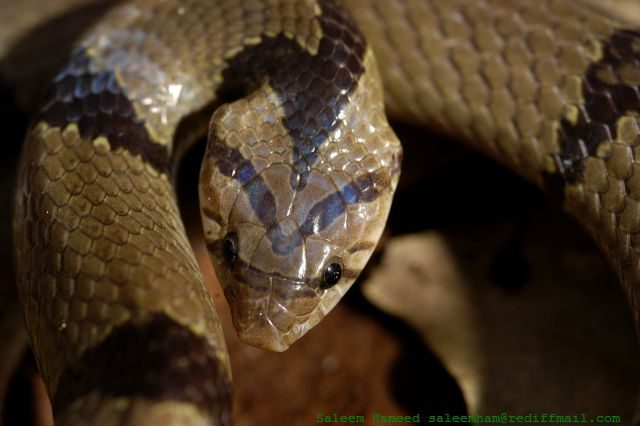

कुकरी साँपCommon Kukri Snake
Oligodon arnensis · Colubridae · REP-0019

- Scientific name
- Oligodon arnensis (Shaw, 1802)
- Family
- Colubridae
- Hindi
- कुकरी साँप
- Local names
- kukri saamp, kukri sanp, kukre saamp, kukri snake
- Status here
- native
- IUCN
- LC
- Review
- audited and independently read
When to look कब देखें
Present all year.
कुकरी साँप / Common Kukri Snake
Oligodon arnensis (Shaw, 1802) — Colubridae
कुकरी साँप — घर और खेत के किनारे पाया जाने वाला एक बिल्कुल हानिरहित साँप, जो बिना जहर के अंडे खाता है। भूरे-काले रंग की आड़ी पट्टियों वाली काली या भूरी पीठ वाला छोटा सांप। बहुत से लोग इसे करैत समझकर मार देते हैं, क्योंकि पट्टियाँ करैत जैसी लगती हैं। पर करैत की पट्टियाँ पूरे शरीर पर हैं, इसकी सिर्फ़ पीठ पर हैं। नाम में "कुकरी" इसलिए है कि इसके मुँह के अंदर की हड्डी (maxilla) पर अरबी ख़ंजर जैसे तीव्र दाँत हैं जो अंडे तोड़ने के काम आते हैं। यह सांप कभी काटता नहीं, सिर्फ़ अंडे खाता है।
Quick Identification त्वरित पहचान
| Feature | Description |
|---|---|
| Size | 35–50 cm; slender body |
| Head | Small, pointed snout, not wider than neck |
| Dorsal pattern | Black or dark brown with 12–20 cream or white crossbands (not encircling belly) |
| Belly | Pale cream or yellow, largely unbanded (key difference from krait) |
| Eyes | Small, round pupils; visible eyes (krait's eyes are hard to see) |
| Body | Smooth scales; not keeled |
| Behaviour | Docile; never bites; may flatten body if threatened |
Field tip: Dark banded snake with white/cream bands on the back only, leaving a pale belly. Bands do not encircle the body. Eyes are clearly visible. Unlike the Common Krait, which is uniformly banded all around. Also smaller and always nocturnal in gardens, never inside houses hunting at night.
हिंदी — कैसे पहचानें: पीठ पर काली-भूरी आड़ी पट्टियाँ, पर पेट का रंग साफ़ पीला या क्रीम है, पट्टियों से घिरा नहीं। आँखें साफ़ दिखती हैं। करैत की पट्टियाँ पूरे शरीर पर हैं। काटता नहीं, अंडे खाता है।
Morphology आकारिकी
Biometrics (typical measurements for northern Indian populations):
| Measurement | Range |
|---|---|
| Total length | 35–50 cm |
| Head-body length | 30–45 cm |
| Tail length | 5–10 cm |
| Weight | 40–120 g |
Head: Small, pointed snout; eyes small with round pupils clearly visible. Rostral scale projects downward.
Scales: Dorsal scales smooth, arranged in 15–17 rows at midbody. A notable longitudinal ridge (carina) runs along the lower jaw inside the mouth. The maxillary teeth are modified into specialized teeth with sharp, knife-like edges (hence "kukri," the Nepalese curved blade) adapted for cutting through eggshells.
Pattern: The dorsal ground colour is dark brown or black. The crossbands (12–20) are white or cream and run from the spine down the sides but do NOT encircle the belly. The belly (ventral surface) is uniformly pale cream or yellow with little or no banding. This is the critical field character separating it from the similarly-banded but entirely encircled Common Krait.
हिंदी: छोटा, नुकीले सिर वाला। पट्टियाँ सिर्फ़ पीठ पर, पेट साफ़ पीला। मुँह के अंदर तीव्र दाँत अंडे तोड़ने के लिए।
Behaviour & Ecology व्यवहार और पारिस्थितिकी
A specialist egg-eater, hunting at night for the eggs of birds, lizards, and other reptiles. It searches on the ground, in grass clumps, in bird nests, and in crevices. Once an egg is found, the snake swallows it whole, and special teeth inside the mouth puncture and grind the shell; the fragments are ejected after the contents are consumed (ovophagy with shell-crushing).
Entirely docile. If handled or threatened, it flattens its body and may hiss, but it never bites—its teeth are too specialized for eggs and cannot be used for defense. During the dry months (November–March), it becomes dormant in crevices or burrows.
It is preyed upon by larger snakes, birds of prey, and carnivorous mammals, but its small size and nocturnal habit reduce exposure.
हिंदी: रात को अंडे खोजता है — पक्षियों, छिपकलियों, दूसरे सांपों के अंडे। अंडा पूरा निगल लेता है, मुँह के अंदर तीव्र दाँतों से खोल तोड़ता है, दानेदार टुकड़े निकाल देता है। कभी काटता नहीं।
Life Cycle / Phenology जीवन चक्र
| Season | Event |
|---|---|
| April–June | Mating; eggs being laid by prey species |
| May–October | Active hunting season; feeding on eggs of active breeders |
| June–August | Monsoon; activity peaks as many species lay eggs |
| October–November | Feeding season ends as temperatures drop |
| November–March | Dormant in crevices or burrows; no feeding |
Host Plants or Prey आहार
- Bird eggs (all available species; particularly of ground-nesting birds)
- Lizard eggs (Hemidactylus, Calotes, other species)
- Reptile eggs (other snakes, turtles)
- Occasionally insects (rarely)
Predators / Natural Enemies शत्रु
- Large venomous snakes (Indian Cobra, Common Krait)
- Birds of prey (eagles, kites)
- Small Indian Mongoose
- Other carnivorous reptiles
- Domestic cats and dogs
Agricultural / Human Relevance कृषि प्रासंगिकता
No harm to humans. The Common Kukri Snake is completely harmless. It cannot bite and feeds only on eggs. Its presence in gardens may affect wild bird and reptile eggs, but this is negligible in the context of predation by other species.
Safety first: mistaken identity. The primary risk is human killing due to confusion with the Common Krait. The krait is nocturnal, venomous, and deadly, especially to children. The kukri is also nocturnal but is entirely harmless. Education on the differences (belly pattern, eye visibility, bands encirclement) is essential.
Today. No economic role. Often killed on sight out of fear, despite being completely harmless.
Expected Locally स्थानीय रूप से अपेक्षित
Not a field record. Written from published accounts for eastern Uttar Pradesh. No confirmed local sighting yet — if you have seen it, that is what the atlas needs.
अभी तक स्थानीय पुष्टि नहीं। यह विवरण प्रकाशित स्रोतों से है, किसी अवलोकन से नहीं।
Expected in gardens, field bunds, and scrub areas from May to October when ground-nesting birds are breeding. Sightings peak during the monsoon when most reptiles are laying eggs. Nocturnal, so rarely seen unless encountered during fieldwork at night.
Distribution वितरण
Global range: Indian subcontinent and Southeast Asia.
In India: Throughout the peninsular and Gangetic plains from the coast to the Himalayan foothills.
In Uttar Pradesh: Widespread in agricultural and open terrain.
In Basti district / eastern UP: Expected in gardens and field margins during the breeding season.
Research Questions शोध प्रश्न
Anyone can investigate these | कोई भी इन प्रश्नों की जाँच कर सकता है
- How can we design a simple illustrated card to distinguish the harmless Kukri Snake from the dangerous Krait for farmers? / कुकरी और करैत के बीच अंतर सिखाने के लिए कैसा चित्र कारड बनेगा? — Sketch the key differences: bands on belly (krait) vs. belly unbanded (kukri); krait's tiny eyes; kukri's visible eyes.
- What bird and reptile eggs are available in Basti during May–September? — Survey nesting birds and reptiles with eggs in that period.
- How many kukri snakes are killed annually due to mistaken identity in one village? — Ask older residents.
- Can we find a kukri snake during the monsoon in a garden known to have ground-nesting birds? — Search at night in May–August in bird-nesting habitat.
- Does the presence of kukri snakes reduce bird egg success in a garden? — Monitor a garden with and without snakes.
Similar Species मिलती-जुलती प्रजातियाँ
| Species | How to tell apart | हिंदी |
|---|---|---|
| Common Krait (Bungarus caeruleus) | Much larger (100+ cm); bands encircle entire body including pale belly; eyes tiny, almost invisible; venomous, nocturnal, deadly | करैत बहुत बड़ा, पूरे शरीर पर पट्टियाँ, आँखें छोटी, जहरीला |
| Indian Cobra (Naja naja) | Much larger; can spread hood; large eyes; venomous | बहुत बड़ा, फन फैलाता है, जहरीला |
| Common Bronzeback Tree Snake (Dendrelaphis tristis) | Uniform green or brown, no bands; larger; tree-dwelling | हरा या भूरा, पट्टियाँ नहीं, पेड़ों पर रहता है |
Field rule: A small dark snake with white/cream bands on the back only (belly pale and unbanded) and clearly visible eyes that never bites is a Kukri Snake. Always harmless.
Taxonomy & Classification वर्गीकरण
Original description. Described by George Shaw in 1802 in Zoological Miscellany, vol. 13, p. 525. The species epithet arnensis refers to the Arn River in Bengal (now the Assam region).
Subspecies. Several subspecies are recognized across the wide range; Oligodon arnensis arnensis occurs in northern India.
Family and order placement. Colubridae, a large cosmopolitan family of non-venomous snakes; order Squamata, class Reptilia.
Phylogenetic notes. Oligodon is a genus of small Asian colubrid snakes, all egg specialists with similar adaptations.
IUCN status rationale. Least Concern. Widespread and abundant; no major threats.
Photo Gallery फोटो गैलरी
Photos needed आवश्यक फोटो
- [ ] Snake on the ground showing belly pattern (साँप जमीन पर, पेट दिखता हुआ)
- [ ] Head detail showing visible eyes (सिर, आँखें साफ़)
- [ ] Comparison with krait bands (करैत से तुलना)
No photos yet — add field photos to media/species/common_kukri_snake/ and run node scripts/sync_photos.js.
Atlas Connections संबंधित प्रजातियाँ
- Common Krait — often confused with this harmless snake despite major differences
- Indian Cobra — another species mistaken for this harmless snake
- Barn Owl — hunts this species as prey
- ground nesting birds — nests this snake feeds on
References संदर्भ
- Shaw, G. (1802). Zoological Miscellany, vol. 13, p. 525. London. [original description]
- Boulenger, G.A. (1893). Catalogue of the Snakes in the British Museum, vol. 1. British Museum, London.
- Smith, M.A. (1943). The Fauna of British India, Ceylon and Burma, Including the Whole of the Indo-Chinese Sub-Region. Reptilia and Amphibia, vol. 3. Taylor and Francis, London.
- Wallach, V., Wynn, A.H. & Brooks, D.R. (2014). Assessment of the Higher-Level Phylogeny within Colubroidea. ZooKeys, 406, 1–35.
- Whitaker, R. & Captain, A. (2004). Snakes of India: The Field Guide. Draco Books, Chennai.
- GBIF Occurrence Data — Oligodon arnensis, India (2026).
Source file: species/fauna/reptiles/common_kukri_snake.md